USD prim types in the Outliner
To differentiate between various prim types, USD data in Maya features a unique set of prim icons and composition arc badges that are viewable from the Outliner.
- Windows > Outliner
Prim Type Icon Index
Prim type icons in the Outliner are based on an inheritance schema, which allows the descendants of a prim to gain a parent prim's icon unless it has a unique icon created for itself.
| Icon | Prim Type | Description |
|---|---|---|
| 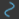 | BasisCurves NurbsCurves |
BasisCurves are a batched curve representation, often used to render geometry like hair or grass. NurbsCurves is a spec that supports batching of multiple curves into a single prim, widths, and normals in the schema. |
| Mesh | A point-based prim that is defined in terms of points that are connected into edges and faces. | |
| NurbsPatch | A non-uniform spline surface with natural UV parameters. This enables you to "trim curves" and allow smooth shapes to be carved out of a surface. | |
| 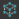 | Points | A base class for prims that possess points, such as normals and velocities. |
| 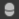 | Capsule | A prim shaped in the form of a capsule; a cylinder capped by two half spheres, centered at the origin, whose spine is along the specified axis. |
| Cone | A prim shaped in the form of a cone; centered at the origin, whose spine is along the specified axis, with the apex of the cone pointing in the direction of the positive axis. | |
| 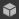 | Cube | A rectilinear prim shaped in the form of a cube, centered at the origin. |
| 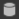 | Cylinder | A prim shaped in the form of a cylinder, centered at the origin, whose spine is along the specified axis. |
| 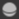 | Sphere | A prim shaped in the form of a sphere centered at the origin. |
| Volume | A renderable volume prim. | |
| 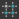 | PointInstancer | A vectorized instancing of multiple, potentially animated, prototypes (object/instances), which can be arbitrary prims/subtrees on a stage. PointInstancer is a "multi instancer", as it allows multiple prototypes to be scattered among its "points". |
| 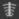 | SkelRoot Skeleton |
A body and topology of a skeleton. |
| 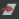 | XForm | An xform is the most robust prim type because it can be transformed. |
| MayaReference ALMayaReference |
A Maya reference and all its metadata. | |
| Camera | A transformable (XFormable) camera. | |
| CylinderLight DiskLight DistantLight DomeLight GeometryLight RectLight SphereLight LightFilter LightPortal |
Lights can be linked to geometry. Linking controls which geometry a light illuminates, and which geometry casts shadows from the light. | |
| Scope | A scope is a container that cannot be transformed. It is the simplest prim type and is useful for creating a hierarchical structure. For example, materials are typically held within a scope, because they do not need to be transformed. | |
| 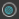 | GeomSubset | Encodes a subset of a piece of geometry. To apply a subset to a prim, a GeomSubset prim must be defined as a child of it. |
| 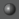 | NodeGraph | NodeGraph is a container for shading nodes, as well as other node-graphs. |
| Material | A Material provides a container into which multiple "render targets" can add data that defines a "shading material" for a renderer. | |
| Shader | Shaders are the building blocks of shading networks. These objects generally represent a single shading object, whether it exists in the target renderer or not. | |
| SkelAnimation PackedJointAnimation |
The animation of a skeleton. | |
| 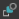 | BlendShape | A target blend shape, possibly containing in between shapes. |
| 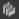 | Backdrop | Provides a 'group-box' for the purpose of node graph organization. |
| def | A def is a type-less prim type. Since defs are empty and contain no information, they are used for defining references. A def can easily take on the prim type of the referenced prim, making it the ideal prim type for this scenario. | |
| someOtherType | Generic fallback for usdTyped schemas. |
XBMLANGPATH. This will normally be corresponding to the following folder path on your system:<SystemFolderPath>/maya/2021/prefs/icons
When naming a file, ensure that it abides by the following nomenclature: out_USD_<nodetype>.png. Icons in Maya are supported for high resolution display, therefore you can include higher dpi versions such as out_USD_<nodetype>_150.png and out_USD_<nodetype>_200.png.
Icon Badges
To distinguish prims that have a composition arc and those that have a variant specifically, USD data in the Outliner features icon badges.
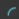 If a prim has any of the following composition arcs: inherit, reference, specialize, payload but doesn't have a variant, then it receives the composition arc badge.
Composition Arcs
Composition arcs are the "operators" that enable you to create relations between many layers in USD. Composition occurs when you open a stage, load or unload prims on a stage, or edit layers that contribute to the stage. There are six kinds of arcs: sublayers, inherits, variants, references, payloads, and specializes. In all arc types, stronger layers override weaker layers.
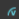 If a prim has a variant composition arc, then it receives the variant badge in addition to the composition arc badge.
Variants
A Variant is a single, named variation of a variant set. Each Variant Set is a package of alternatives that users can switch between non-destructively. A variant set has no limits to what it can store. A single prim can have many variants and variant sets, but only one variant from each variant set can be selected and set for a prim. Variants can be used to swap out a material or change the entire hierarchy of an asset. Use the USD Contextual Menu in the Outliner to switch between variants in a variant set.
Related Concepts: To learn more, see variant, variantSet in the Pixar USD Glossary.